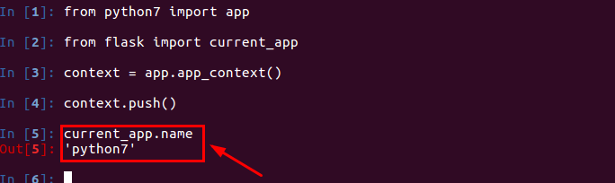

2.2 扩展
上下文：相当于一个容器，保存了Flask程序运行过程中的一些信息。
Flask中有两种上下文，请求上下文和应用上下文。
请求上下文(request context)
request和session都属于请求上下文对象。
request：封装了HTTP请求的内容，针对的是http请求。举例：user = request.args.get('user')，获取的是get请求的参数。
session：用来记录请求会话中的信息，针对的是用户信息。举例：session['name'] = user.id，可以记录用户信息。还可以通过session.get('name')获取用户信息。
应用上下文(application context)
current_app和g都属于应用上下文对象。
current_app:表示当前运行程序文件的程序实例。我们可以通过current_app.name打印出当前应用程序实例的名字。

g:处理请求时，用于临时存储的对象，每次请求都会重设这个变量。比如：我们可以获取一些临时请求的用户信息。
- 当调用app = Flask(_name_)的时候，创建了程序应用对象app；
- request 在每次http请求发生时，WSGI server调用Flask.call()；然后在Flask内部创建的request对象；
- app的生命周期大于request和g，一个app存活期间，可能发生多次http请求，所以就会有多个request和g。
- 最终传入视图函数，通过return、redirect或render_template生成response对象，返回给客户端。
区别： 请求上下文：保存了客户端和服务器交互的数据。 应用上下文：在flask程序运行过程中，保存的一些配置信息，比如程序文件名、数据库的连接、用户信息等。
请求钩子
在客户端和服务器交互的过程中，有些准备工作或扫尾工作需要处理，比如：在请求开始时，建立数据库连接；在请求结束时，指定数据的交互格式。为了让每个视图函数避免编写重复功能的代码，Flask提供了通用设施的功能，即请求钩子。
请求钩子是通过装饰器的形式实现，Flask支持如下四种请求钩子：
before_first_request：在处理第一个请求前运行。
before_request：在每次请求前运行。
after_request：如果没有未处理的异常抛出，在每次请求后运行。
teardown_request：在每次请求后运行，即使有未处理的异常抛出。
Flask装饰器路由的实现：
Flask有两大核心：Werkzeug和Jinja2。Werkzeug实现路由、调试和Web服务器网关接口。Jinja2实现了模板。
Werkzeug是一个遵循WSGI协议的python函数库。其内部实现了很多Web框架底层的东西，比如request和response对象；与WSGI规范的兼容；支持Unicode；支持基本的会话管理和签名Cookie；集成URL请求路由等。
Werkzeug库的routing模块负责实现URL解析。不同的URL对应不同的视图函数，routing模块会对请求信息的URL进行解析，匹配到URL对应的视图函数，以此生成一个响应信息。
routing模块内部有Rule类（用来构造不同的URL模式的对象）、Map类（存储所有的URL规则）、MapAdapter类（负责具体URL匹配的工作）；
Flask-Script扩展命令行
通过使用Flask-Script扩展，我们可以在Flask服务器启动的时候，通过命令行的方式传入参数。而不仅仅通过app.run()方法中传参，比如我们可以通过python hello.py runserver --host ip地址，告诉服务器在哪个网络接口监听来自客户端的连接。默认情况下，服务器只监听来自服务器所在计算机发起的连接，即localhost连接。
我们可以通过python hello.py runserver --help来查看参数。
from flask import Flask
from flask_script import Manager
app = Flask(__name__)
manager = Manager(app)
@app.route('/')
def index():
return '床前明月光'
if __name__ == "__main__":
manager.run()